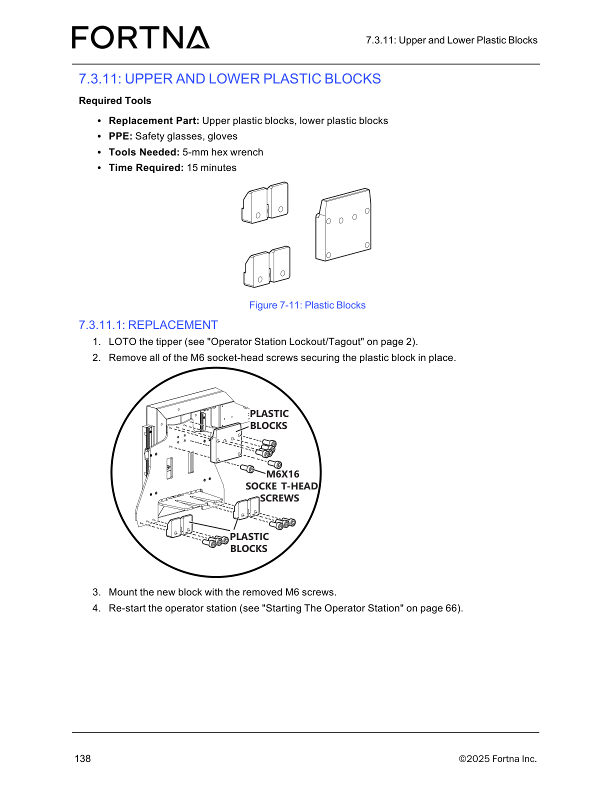

| Procedure ID | proc_replace_tote_detect_sensor_loto_tippler_disconnect_m8_remove_remount_v1 |
|---|---|
| Title | Replace Tote Detect Sensor (LOTO tipper, disconnect M8, remove and remount sensor) |
| Procedure Type | recovery |
| Primary Role | operator |
| Support Safe | Yes |
| Capability Tags | tipper_station_fault |
| Access Surface | physical_floor |
| Audience Roles | operator |
| Failure Pattern Tags | None |
| Validation Status | needs_sme_review |
| Merge Status | source_finalized |
Safely lock out the OptiSweep tipper, remove the Tote Detect sensor by disconnecting the M8 connector and M3 socket-head screw, pull the sensor out, mount the replacement sensor using the M3 socket-head screws, and restart the operator station.
Use when the Tote Detect sensor must be physically removed and replaced on the OptiSweep tipper (sensor replacement task).


Responsible role: operator
Instruction:
Use the manual’s “Sensors” section to identify the Tote sensor locations, then locate the Tote Detect sensor on the tipper/frame.
Expected result:
You have identified the correct Tote Detect sensor location on the tipper for the subsequent M8 disconnect and M3 screw removal.
Stop or Escalate If:
Responsible role: operator
Instruction:
Perform LOTO of the tipper using the manual’s “Operator Station Lockout/Tagout” procedure (page 2).
Expected result:
The tipper is in a locked out/tagged out state before any sensor disconnection/removal.
Stop or Escalate If:
Responsible role: operator
Instruction:
Disconnect the M8 connector and remove the M3 socket-head screw securing the Tote Detect sensor.
Expected result:
The M8 connector is disconnected and the M3 socket-head screw is removed, allowing the sensor to be pulled out.
Stop or Escalate If:
Responsible role: operator
Instruction:
Pull the Tote Detect sensor out of the frame/mount.
Expected result:
The Tote Detect sensor is removed from the frame/mount.
Stop or Escalate If:
Responsible role: operator
Instruction:
Mount the replacement Tote Detect sensor using the M3 socket-head screws.
Expected result:
The replacement sensor is mounted and secured with the M3 socket-head screws.
Stop or Escalate If:
Responsible role: operator
Instruction:
Restart the operator station using the manual’s “Starting The Operator Station” procedure (page 66).
Expected result:
The operator station is restarted after the sensor replacement.
Stop or Escalate If: